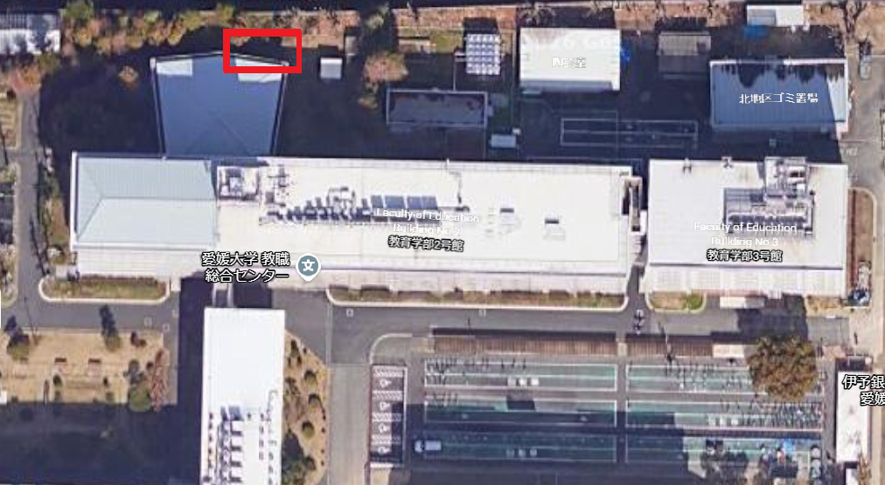
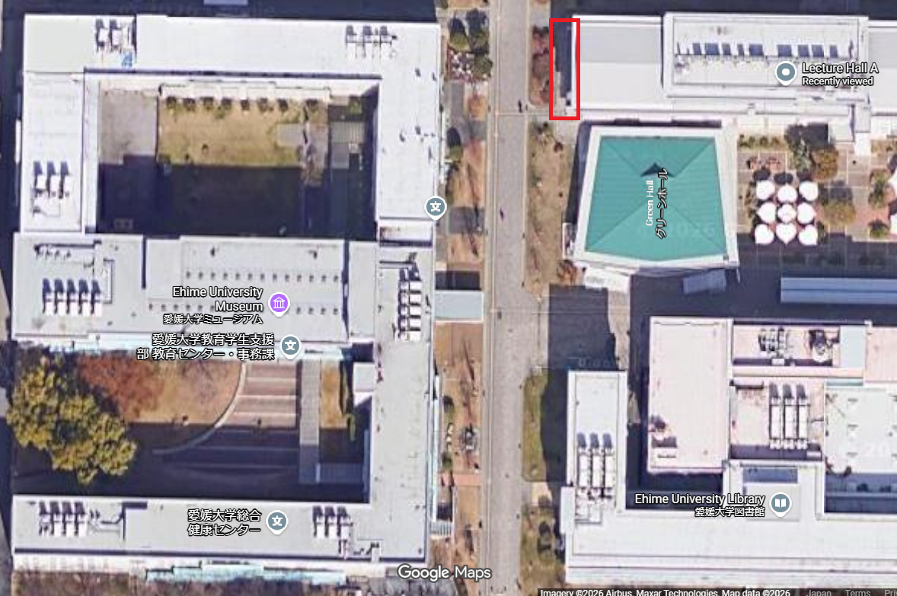

餌保管場所
社会共創学部 付近
| 対象エリア | 社会共創学部棟 周辺 |
|---|---|
| 給餌キット保管 | 緑色のコンテナボックス |
| Google Maps | https://maps.app.goo.gl/1brXkPD2dLzwZyAt7 |

| 対象エリア | 社会共創学部棟 周辺 |
|---|---|
| 給餌キット保管 | 緑色のコンテナボックス |
| Google Maps | https://maps.app.goo.gl/1brXkPD2dLzwZyAt7 |
| 対象エリア | 教育学部棟の南側 ／ 共通講義棟C東側の駐輪場奥（植栽・フェンス沿い） |
|---|---|
| Google Maps | https://maps.app.goo.gl/A978aCmN9t6X6LeX7 |

| 対象エリア | 愛媛大学ミュージアム東側 ／ 講義棟A（Lecture Hall A）西端のデッキ・通路沿い |
|---|---|
| 近隣主要施設 | 愛媛大学ミュージアム、グリーンホール、教育学生支援部、愛媛大学図書館 |
| Google Maps | https://maps.app.goo.gl/8P7zoT8BDSAf7DAr5 |
